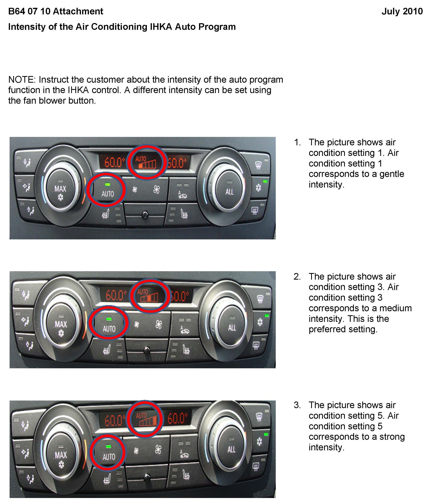
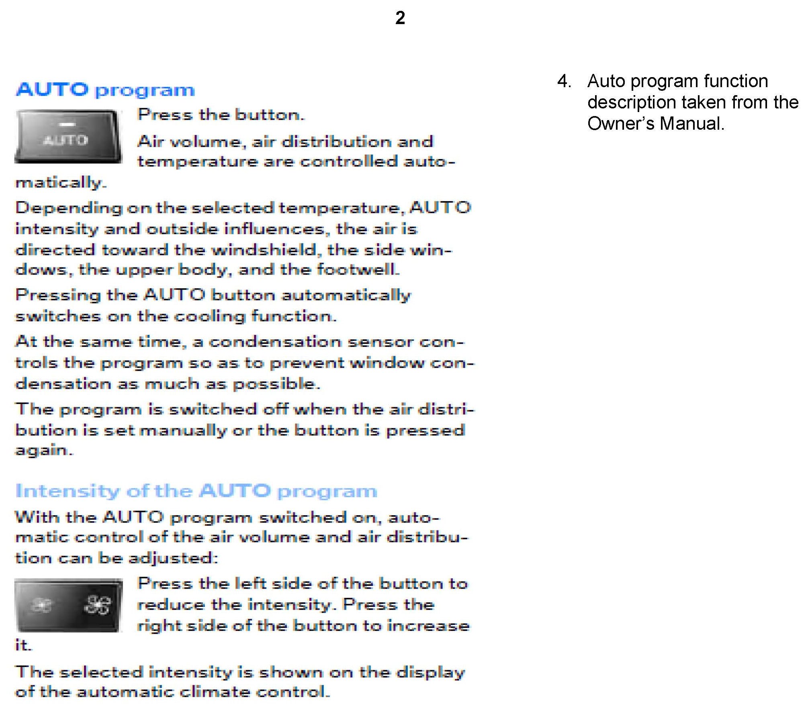

A/C - Air Flow Too Strong/Weak in 'Auto' Mode
SI B 64 07 10Heating and Air Conditioning
July 2010
Technical Service
SUBJECT
Intensity of the IHKA Auto Mode Program
MODEL
E82, E88 (1 Series)
E9x (3 Series)
Vehicles produced from 8/10/09
SITUATION
The intensity of the air flow from the integrated automatic heating and air conditioning control panel (IHKA) is too strong or too weak in "Auto" mode.
CAUSE
The customer is not familiar with the new IHKA control panel. There is no fault with the IHKA system.
A new IHKA control panel was introduced on vehicles from the 2010 model year that included a new setting; this gives control over the air intensity in "Auto" mode. At the same time, the display operation was changed to display either "fan speed" in "Manual" mode, or "intensity" in "Auto" mode.
Customers are not aware that they should use the fan speed buttons when in "Auto" mode to set the air flow to their liking.
Instruct the customer about the intensity of the Auto program function styles in the control panel of the IHKA system. Point out the section in the Owner's Manual that deals with this feature.
INFORMATION
See the attachment for the Owner's Manual and additional setting information.
WARRANTY INFORMATION
For information only


ATTACHMENTS
view PDF attachment B640710Attachment.